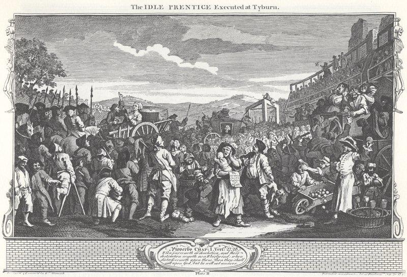

The Petition of Tyburn
La pétition de Tyburn
A vengeful song on the famous gallows (c. 1720)
Tune - Mélodie"Which nobody can deny"
As directed in the MS in the DOUCE Collection, part of the Rawlison MSS in the Bodleian Library.
Sequenced by Christian Souchon

William Hogarth (1697 - 1764)
Industry and Idleness, Plate 11
The Idle Prentice Executed at Tyburn
|
To the tune:
See Nobody can deny |
A propos de la mélodie:
Cf. Sans qu'on trouve à redire rien |

|
The Petition of Tyburn [1]
1. To you, German Sir, a Petition I bring, [2] Tho' I, Heav'ns know, am a poor wooden Thing, And you're but a poor wooden Tool, call'd a King, Which no Body can deny, deny, Which no Body can deny! 2. My Name it is Tyburn, let not that alarm ye, For Cause there is good you shou'd do somewhat for me, Since I've slain you more Foes than your whole Standing Army. Which no Body can deny... 3. Now, 'tis no great Matter for which I do sue, For my whole and my sole Application to you, Is for nothing but what has long since been my due. 4. Your Gen'rals I claim, whether old Ones or New, Those that wear your Green Ribbands, and those that wear Blue, [3] For I've a String better than either o' th' Two. 5. Old Marlborough first, that renown'd Treason-monger, [4] I demand as the fittest to lead up the Throng there, He has cheated me long, but shall cheat me no longer. 6. Nor let it be deem'd any Shame to his Race, For so high-born a Peer to be brought to this Place, For I've had many better Men here than his Grace. 7. Your Aylmers [5] and Byngs [6], and your Admirals round, Are destin'd by Fate, all to die on dry Ground, For not a Man of 'em all was born to be drown'd. 8. Your new-lorded Stanhope to my Quarters send, [7] Who looks not i' the Face either of Foe or of Friend, For he'd rather by half they would shew t'other end. 9. There's Townshend and Walpole, those Birds of a Feather, [8] Who side with both Parties, yet care not for either, As they've done all their Lives, let 'em now hang together. 10. Old Sunderland's Son is a man of great Fire, [9] And therefore I'll tie him a Knot or two higher, He shall pay off his own Scores, and those of his Sire. 11. Send Cowper to me, and I'll soon put him out [10] Of all manner of Pain, be it Pox, Stone, or Gout, As sure as his Brother did poor Sarah Stout. [11] 12. Without Bail or Mainprize your Chief Justice dispatch, [12] To my Trusty and Well-belov'd Cousin, 'Squire Ketch, [13] As he stretches the Law, a Hempcord let him stretch. 13. To my Brother in Ireland, o' th' same Occupation, I'll give Lord Cadogan a Recommendation, [14] For his Grandsire's sake (once Jack Ketch o' th' Nation). 14. To Pelham, that blust'ring Head of the Many, [15] I've nothing to say, but shall leave the poor Zany For's own Mob to knock out his Brains, if h'as any. 15. Those Episcopal Fathers of Presbyter Strain, [16] Who are fed by the Church, yet its Altars prophane, I'll consign to my Chaplain, the good Paul Lorrain. [17] 16. As concerning your Germans there needs no harranguing, But what I beg is, that you'd send 'em all ganging To the Place whence they came, for they're hardly worth hanging. 17. For hating the Prince, you unnatural Elf, For kicking him out, like no Son of a Guelph : [18] For all these good Reasons, pray go hang up your Self! 18. Do but grant this Petition, and God save the King ! While I stand on three Legs, I'll sing, hey ding a ding, [19] For I've got all the World, when I've You in a String.' Which no Body can deny, deny, Which no Body can deny! Source: C.H. Firth in "Scottish Historical Review", 1911, page 256. |
La Pétition de Tyburn [1]
1. Ma pétition, Seigneur Guelfe, écoutez-là, [2] Bien que ne je sois rien qu'un objet en bois. Un roi, c'est un outil en bois, comme moi, Ce dont tout un chacun convient, convient, Ce dont tout un chacun convient! 2. Mon nom c'est Tyburn, ne vous effrayez pas, Vous avez tout lieu d'être content de moi: J'ai tué plus d'ennemis que tous vos soldats Ce dont tout un chacun convient... 3. C'est une affaire sans importance qui A cette unique requête m'a conduit, Un droit qui depuis fort longtemps m'est acquis, 4. Je veux vos généraux, les jeunes, les vieux Qu'ils portent des cordons verts, des cordons bleus: [3] J'ai moi-même un cordon qui leur ira mieux. 5. D'abord le vieux Marlborough, maître en trahison. [4] C'est le plus apte à mener le peloton. Assez triché, l'heure est à sa pendaison. 6. Qu'on ne m'estime pas indigne de lui, Au motif qu'un Pair n'a pas sa place ici: De bien meilleurs que lui moururent ici. 7. Vos Aylmer [5], vos Byng [6] et tous vos amiraux, Le sort les destine tous à l'échafaud. Aucun ne naquit pour trépasser dans l'eau. 8. Stanhope qu'on vient d'anoblir est à moi. [7] Regarder un autre en face il ne sait pas. Des moitiés d'humains, c'est là tout ce qu'il voit. 9. Walpole et Townshend, les deux frères ennemis, [8] Courtisent et méprisent les deux partis, Unis dans la vie, qu'ils pendent réunis! 10. Le fils du vieux Sunderland est un gaillard [9} Aussi vais-je pour lui raccourcir le hard. Il paiera pour lui-même et le vieux pendard! 11. Envoyez-moi Cowper, car pour le guérir [10] Vérole, pierre ou goutte, j'ai l'élixir, Qu'à Sarah Stout son cher frère sut offrir. [11] 12. Sans main-prise ni caution, le Juge-en-chef [12] Soit remis à mon cher cousin, Maître Ketch, [13] L'un tire sur la Loi, l'autre sur la laisse. 13. Mon frère en Irlande a le même métier: Lord Cadogan je veux lui recommander [14] Au nom de son aïeul (Kerr est Irlandais). 14. De Pelham, le chef fanfaron des Communes [15] Rien à dire, que ses propres gens lui brûlent La cervelle, si tant est qu'il en ait une. 15. Episcopaliens semi-Presbytériens, [16] L'Eglise vous nourrit: vous lui mordez la main. Qu'on vous livre à mon aumônier Paul Lorrain! [17] 16. Et je ne parlerai pas de vos Germains Que dans son pays s'en retourne chacun. La corde pour les pendre ils ne valent point. 17. Ta haine du Prince, monstre de noirceur, Et son éviction, faux Guelfe et vrai voleur, [18] T'ont jugé: va donc te faire pendre ailleurs! 18. Accède à ma demande, et vive le Roi! Je suis solide sur mes pieds: j'en ai trois. [19] Le seul vrai pendu qui me manque, c'est toi! Ce dont tout un chacun convient, convient, Ce dont tout un chacun convient! (Trad. Christian Souchon (c) 2011) |
|
[1]
Tyburn
: Close to the current location of "Marble Arch" in London was a name universally used in literature to refer to the gallows, used from 1571 till 1783 for the execution of London criminals who processed from Newgate Prison in the City, via St Giles in the Fields and Oxford Street. The executions were public spectacles and attracted crowds of thousands. The villagers of Tyburn erected large spectator stands so that as many as possible could see the hangings (for a fee). Convicts were expected to put on a good show, wearing their finest clothes and going to their deaths with insouciance.
[2] Petition : The "Tyburn Tree" was perhaps prompted to a written petition by the example of the "Last Dying Speeches", sheets of paper printed on one side only, without columns, known as "broadsides" or "broadsheets", that were sold for a penny or less to the audiences which gathered to witness public executions. Typically they featured a picture of the crime scene, or of the execution; an account of the crime and sometimes of the trial; and the purported confession of the criminal. At the centre of William Hogarth's engraving (1747) illustrating this page, a woman is selling such broadsides. The reliability of some of these reports was questionable, when they were published before the execution even took place, as appears on the picture showing the woman already selling the convict's "last dying speech". (See also Mr Paul ). [3] Green and blue ribands : Green ribbons were a sign of recognition with the "Levellers", who emphasised popular sovereignty during the Civil War and the Interregnum. Blue ribbons early symbolized high quality [4] John Churchill, first Duke of Marlborough : see A Halter for Rebels , notes 10 and 11 [5] Matthew Aylmer (1650 - 1720) advanced to admiral and commander-in-chief, after he had commanded in second at Barfleur in 1692. He was appointed a Lord of the Admiralty in 1694 but retired from active service in 1699. After the accession of George II, in 1714, he was promoted to Rear Admiral of the Kingdom. [6] George Byng (1663 - 1733) was instrumental in instigating the Royal Navy to switch allegiance to William of Orange, which insured him rapid rise in rank and fortune. Among other heroic deeds he thwarted an attempt to take the Pretender to Great Britain, an intended landing of French troops in the Firth of Forth in 1708. The French fleet pursued round the north of Scotland lost most of theirs ships and men on their way back to Dunkirk. In 1718 he was made Admiral of the Fleet and commanded the fleet which routed the Spanish Fleet at the Battle of Cape Passaro. On his return to England in 1721 he was made rear-admiral of Great Britain, a member of the privy council. He was First Lord of the Admiralty during the reign of King George II. [7] New-Lorded Stanhope (1673 - 1721) : due to his share in establishing the House of Hanover on the throne was appointed one of the two Secretaries of State. Between 1717 and 1721 he was in all but name Prime Minister rather than Walpole (see Delia , note on Robert Walpole). The "Petition of Tyburn" is easily dated. It was written not long after Lord Stanhope's elevation to the peerage (July 12, 1717) and before his death (February 4, 1721). [8] Townshend, Walpole : (see Delia , note on Robert Walpole and The Turnip ). [9] Sunderland : Member of the Cabinet under Walpole (see Delia , note on Robert Walpole). [10] Lord William Cowper (1665 - 1723) : became the first Lord Chancellor of Great Britain (Keeper of the Great Seal, Minister of Justice). He governed the country during the King's absence. In 1716 he presided as Lord High Steward at the trials of the peers charged with complicity in the Jacobite rising, his sentences on whom have been censured as unnecessarily severe. [11] Sarah Stout : Cowper's younger brother, Spencer Cowper (1670 - 1728) was a MP and a barrister. Though he was married, he had an affair with young Sarah Stout who was found dead in the river the day after his visit to her home. The defendant was acquitted. At the time different allegations were made concerning the affair, including the one that the Tories wanted to hang a member of a prominent Whig family. [12] Mainprize : A writ commanding a sheriff to set a prisoner at large, after taking sureties for his appearance (Bailable offence, when bail has been refused). [13] Jack Ketch (d. 1686) : was an (in)famous executioner of Irish extraction employed by King Charles II. He became famous through the barbarous way he performed his duties during the tumults of the 1680s. He executed the death sentences against Lord Russell in 1683 (Rye House Plot), and the Duke of Monmouth in 1685, ( Monmouth Rebellion ). [14] Lord William Cadogan (1675 - 1726) : was a noted officer of Irish origin in the army of Marlborough during the War of the Spanish Succession. When the Hanoverian King George I succeeded in 1714, Cadogan received military favours from the Crown, and in 1715 he replaced the Duke of Argyll in command of the army putting down the Jacobite rising. In 1717 he was a member of the Privy Council and was a Whig MP from 1705 to 1716. [15] Henry Pelham (1694 - 1754) was a Whig Prime Minister from 1743 to his death in 1754. He had no strong personality but was respectful of the forms of the House of Commons. He cried out clever plans for the reduction of the national debt. [16] Episcopalians, Presbyterians : see Awa, Whigs, awa [17] Paul Lorrain (d. 1719) : A Huguenot who was for 22 years secretary to Samuel Pepys, the Chief Secretary of the Admiralty. In 1698 he was appointed Ordinary of Newgate Prison and compiled until 1719 the "dying speeches" mentioned in note 2 and standardized their printing in broadsheets. These confessions, to which are prefixed abstracts of Lorrain's ‘funeral sermons,’ are generally headed ‘'The Ordinary of Newgate, his Account of the Behaviour, Confession, and last Speech of X.,’' &c. They were issued at eight o'clock on the morning following the execution, and signed Paul Lorrain, the public being warned against counterfeits and unauthorised accounts. He derived from this industry an income amounting to three times his official fees. [18] Guelph : see Geordie Whelp's Testament . [19] Three legs : The "Tyburn Tree" erected in 1571 was a novel form of gallows, comprising a horizontal wooden triangle supported by three legs, so that up to 24 convicts could be hanged at a time, as it happened on 23 June 1649.The "Tree" stood in the middle of the roadway, as an obvious symbol of the Law to passers-by. Source for most of the notes above: Wikipedia |
[1]
Tyburn
: Situé près de l'emplacement actuel de "Marble Arch" à Londres ce nom, universellement connu dans la littérature de l'époque était celui du gibet où eurent lieu les exécutions des criminels londoniens de 1571 à 1783. Les condamnés y étaient amenés depuis la prison de Newgate dans la City par les rues St Giles in the Fields et Oxford Street. Les exécutions étaient des spectacles publics qui attiraient des milliers de curieux. LES habitants de Tyburn avaient aménagé des gradins pour que le plus de spectateurs possible puissent assister aux pendaisons (en payant). On attendait des suppliciés un spectacle de qualité, qu'ils revêtent leurs plus beaux habits et aillent à la mort dans l'insouciance.
[2] Pétition : L'"Arbre de Tyburn" a peut-être trouvé l'idée de cette pétition dans les "derniers discours funèbres", des feuilles volantes imprimées d'un seul côté et sans colonnes, appelées "broadsides" ou "broadsheets", vendues pour un penny au maximum au public accouru pour assister aux exécutions publiques. Le modèle type comportait une image de la scène criminelle ou de l'exécution, un récit du crime et parfois du procès, et les soi-disant confessions du criminel. Au centre de la gravure de William Hogarth ci-dessus (1747), une femme vend de telles feuilles. Le sérieux de tels comptes-rendus était douteux lorsqu'ils étaient diffusés avant même que l'exécution ait eu lieu: sur l'image, la femme vend par avance le "dernier discours" du condamné. (Cf. aussi M. Paul ). [3] Rubans verts et bleus : les rubans verts étaient le signe de reconnaissance des "Levellers", champions de la souveraineté du peuple pendant la guerre civile et l'Interrègne. Le ruban bleu a très tôt symbolisé l a haute qualité. [4] John Churchill, 1er Duc de Marlborough : cf. La corde aux rebelles , notes 10 et 11 [5] Matthew Aylmer (1650 -1720) : devint amiral et commandant en chef après avoir commandé en second la flotte à Barfleur en 1692. Il fut nommé Lord de l'Amirauté en 1694 mais se retira du service actif en 1699. Après l'accession au trône de George II, il fut promu au rang de Contre-amiral du Royaume. [6] George Byng (1663 - 1733) : fur l'un des instigateurs du ralliement de la marine royale à Guillaume d'Orange, ce qui lui valut une promotion et un enrichissement rapides. Entre autres hauts faits, il fit échouer une tentative de faire venir le Prétendant en Grande Bretagne, lors d'un débarquement de troupes françaises dans le Firth of Forth en 1708. Il poursuivit la flotte française qui contourna l'Ecosse par le nord et avait perdu presque tous ses hommes et ses bateaux de retour à Dunkerque. En 1718, il fut fait amiral de la flotte et c'est lui qui commandait l'escadre qui mit en déroute les Espagnols à la bataille du Cap Passaro. De retour en Angleterre, il fut promu Contre-amiral de Grande Bretagne et devint membre du conseil privé du roi. Il fut Premier Lord de l'Amirauté sous Georges II. [7] Stanhope qu'on vient d'anoblir (1673 - 1721) : Il contribua à asseoir la monarchie hanovrienne et fut, en récompense, désigné pour être l'un des deux Secrétaires d'Etat. Entre 1717 et 1721, il fut Premier ministre de fait, sinon en titre, à la place de Walpole (cf. Délia , note sur Robert Walpole). On peut ainsi dater la "Pétition de Tyburn": Elle fut écrite peu après que Stanhope soit élevé au pairage (12 juillet 1717) et avant son décès (4 février 1721). [8] Townshend, Walpole : (cf. Délia , note sur Robert Walpole et Le navet ) [9] Sunderland : Membre du Cabinet sous Walpole (cf. Délia , note sur Robert Walpole). [10] Lord William Cowper (1665 - 1723) : premier Lord Chancelier de Grande Bretagne (Garde des Sceaux, Ministre de la Justice). C'est lui qui représentait le roi lors de ses absences. En 1716, il présida en tant que Lord Grand-Intendant les procès des Pairs accusés de complicité lors du soulèvement Jacobite. Ses sentences inutilement sévères furent rapportées. [11] Sarah Stout : Le frère cadet de Cowper, Spencer Cowper (1670 - 1728) était député et avocat. Alors qu'il était marié, il eut une liaison avec la jeune Sarah Stout que l'on retrouva noyée dans une rivière, le lendemain d'une de ses visites chez elle. Le prévenu fut acquitté. A cette occasion on murmura que les Tories essayait de faire pendre un membre d'une influente famille Whig. [12] Main-prise : Commandement au shérif de se garantir contre un défaut de comparution, puis d'élargir un prisonnier (en cas de refus de mise en liberté sous caution). [13] Jack Ketch (décédé en 1686) : Célèbre bourreau irlandais au service du roi Charles II. Il s'était fait une réputation de cruauté barbare dans l'exercice de sa profession lors des troubles des années 1680. Il fut chargé de l'exécution de Lord Russel en 1683 (conspiration de Rye House) et du Duc de Monmouth en 1685, ( rébellion de Monmouth ). [14] Lord Cadogan (1675 - 1726) : C'"était un officier d'origine irlandaise de l'armée de Marlborough pendant la guerre de succession d'Espagne. Quand le roi hanovrien Georges I monta sur le trône en 1714, Cadogan bénéficia des faveurs de la couronne et en 1715 il remplaça le Duc d'Argyll à la tête de l'armée chargée de mater la rébellion Jacobite. En 1717 il devint membre du Conseil privé et il fut député Whig de 1705 à 1716. [15] Henry Pelham (1694 - 1754) : Il fut Premier ministre de 1743 jusqu'à sa mort. Il n'avait pas une forte personnalité, mais était respectueux des formes dans ses relations avec la Chambre de Communes. Il se fit l'avocat d'une politique avisée de réduction de la dette. [16] Episcopaliens, Presbytériens : cf. Awa, Whigs, awa [17] Paul Lorrain (mort en 1719) : Ce Huguenot fut pendant 22 ans le secrétaire de Samuel Pepys, Secrétaire principal de l'Amirauté. Il fut nommé en 1698 Intendant ordinaire de la prison de Newgate et collectionna jusqu'en 1719 les "discours funèbres" dont il est question à la note 2. C'est lui qui donna une présentation uniforme aux "broadsheets". Ces confessions, précédées de résumés des "sermons funèbres" de Lorrain portent en général ce titre: "L'Intendant ordinaire de Newgate rend compte des crimes, de la confession et du dernier discours de X." etc. Elles étaient publiées dès 8 heures, le lendemain de l'exécution et signées Paul Lorrain, le public étant mis en garde contre les contrefaçons illicites. Cette industrie procurait à son auteur des revenus quadruplant ses honoraires officiels. [18] Guelfe : cf. Le testament de Geordie . [19] Trois pieds : L'"Arbre de Tyburn" érigé en 1571 était une potence d'un nouveau modèle, comportant trois poutres horizontales en triangle reposant sur trois poteaux. On pouvait y suspendre jusqu'à 24 suppliciés à la fois, comme ce fut le cas le 23 juin 1649. L'"Arbre" était dressé au milieu de la route, symbole évident de la loi à l'adresse des passants. Source de la plupart de ces notes: Wikipedia |
|
|
|